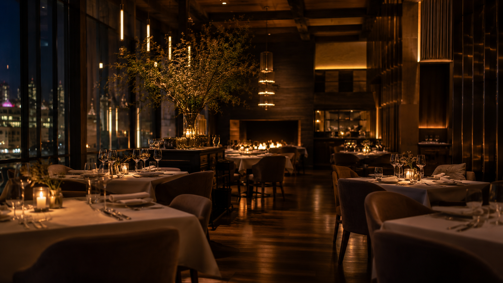
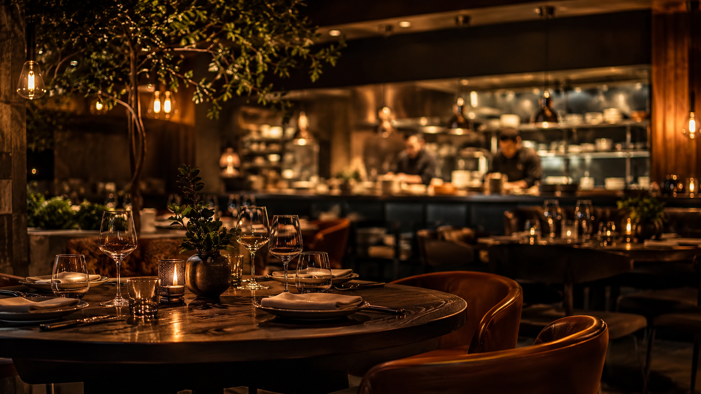

Cinematic dining mood
Warm shadows, copper highlights, and food-led cards make the page feel like a real hospitality brand.

Concept showcase by Hamzah
A warm, premium restaurant and cafe website experience for local businesses that need beauty, trust, and simple booking contact.
Next-level showcase upgrade
The upgrade leans into fire-lit imagery, richer contrast, tighter menu cards, and a direct contact path so a local business can look premium without pretending to have backend reservations.
Warm shadows, copper highlights, and food-led cards make the page feel like a real hospitality brand.
Visitors can explore menu, story, atmosphere, and then move straight to direct owner contact.
The design keeps buttons, sections, and food cards easy to scan on phone, tablet, iPad, and desktop.
Clickable, image-led, honest, and built to show what Hamzah can create for local businesses.

Editorial dining mood
Lighting, food-led image cards, and honest booking copy make the concept feel like a real restaurant website, not a flat template.
Our story
Chef story blocks, menu highlights, location, hours, and booking contact are arranged to make the restaurant feel alive and trustworthy.
See contact optionReservation flow
Visitor sees menu, atmosphere, hours, and style.
Booking/contact happens through direct email, not fake reservation logic.
Owner replies directly with details and availability.
The website turns interest into a real conversation.